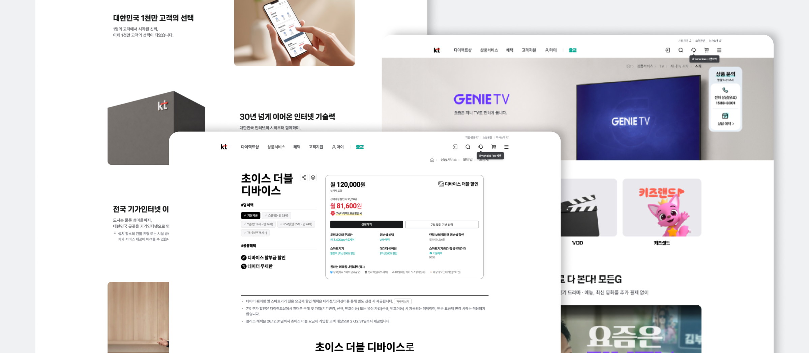
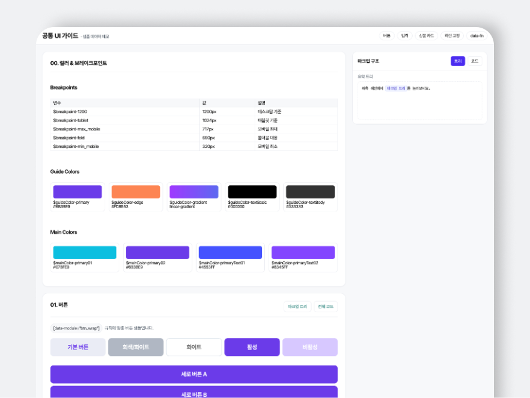
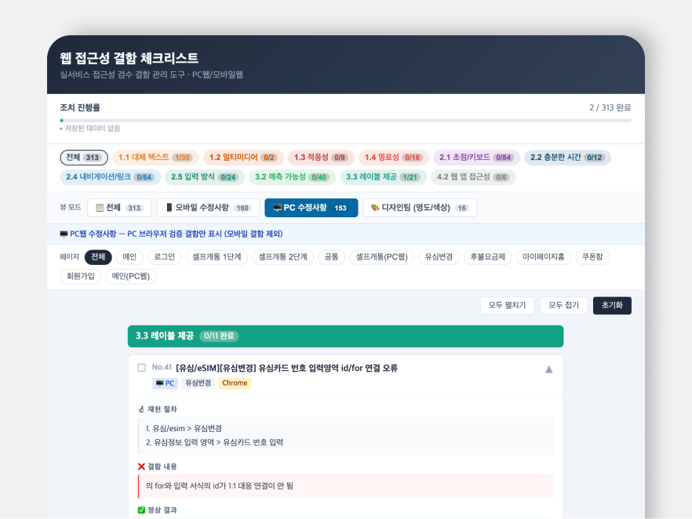
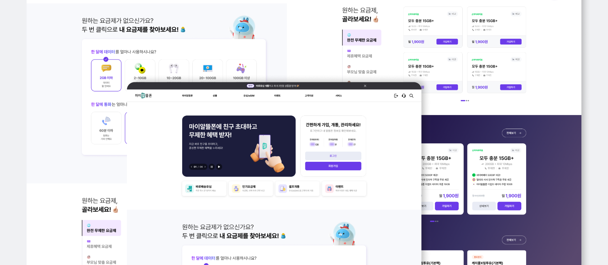
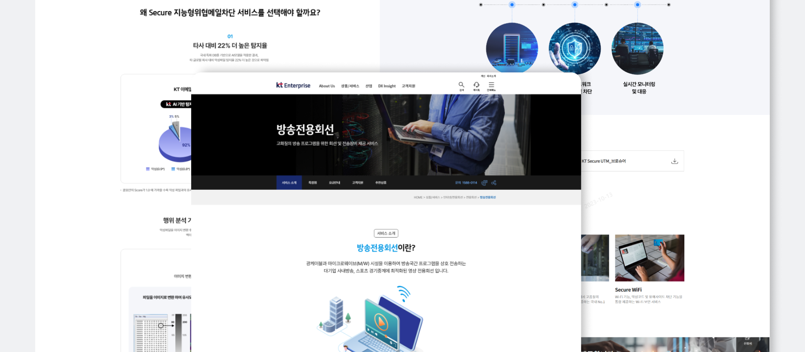
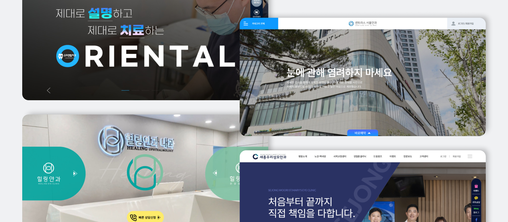

WORK EXPERIENCE
기본툴 활용부터 웹접근/표준성을 고려한 작업까지
엘루오씨앤씨
주요 개선 활동
- 01AI 도구 도입Claude Code, Gemini, ChatGPT 등 AI 업무 도입으로 퍼블리싱 생산성 향상
- 02Git 형상관리 · 코딩 컨벤션Git 기반 형상관리 프로세스 및 코딩 컨벤션 수립·도입으로 협업 체계 표준화
- 03Dart Sass 환경 표준화CSS 컴파일 자동화로 유지보수 효율 개선
- 04공통 UI 컴포넌트 가이드가이드 구축으로 화면 품질 일관성 확보 및 생산성 향상
- 05웹표준 · 웹접근성모든 작업에서 웹표준·웹접근성 고려
KT 닷컴
상품 · 혜택 · 소상공인 페이지 담당

70%
작업 시간 감소
KDS 가이드 기반 퍼블 에셋 적용- 담당 범위KT 닷컴 내 상품, 혜택, 소상공인 페이지
- KDS 퍼블 에셋KDS(KT UX Design System) 디자인 가이드 기반 에셋 세팅·적용,
nsprod-·nsbnft-등 접두사로 신규 스타일(CSS/JS) 파일 분리 - CMS 운영CMS 내 대부분 페이지 관리 및 HTML 직접 수정
- 배포 일정직접 파일 업로드·배포가 필요한 페이지(다수의 혜택 페이지)는 시간 엄수
- 협업외부 기획자와 직접 소통
- 검수외부 기획자와의 협업 특성상 꼼꼼한 검수가 핵심, 줄어든 작업 시간만큼 검수 시간 추가 확보
KT 마이알뜰폰
반응형 웹 · 빌드/개발 프로세스 개선 · 주요 페이지 리뉴얼



90%
코드 충돌 감소
Git/GitLab 형상 관리 체계 구축80%
크로스 브라우징 이슈 감소
Dart Sass 환경 도입30%
작업 시간 단축 (약)
npm 기반 자동화 빌드 환경 구축- 환경반응형 웹 (Responsive Web)
- 빌드 · 개발 환경npm 기반 자동화 빌드 환경 구축 (Sass/SCSS 컴파일러, PostCSS, Autoprefixer), 브라우저 호환성 문제 해결
- 형상 관리Git/GitLab 체계 구축, Git Flow 적용, 수동 파일 공유를 Git 기반으로 전환, 내부망/외부망 분리 관리 체계 수립
- 공통 UIdata-attribute 기반 공통 UI 체계
- 주요 리뉴얼메인 페이지(기여도 70%) · 마이알뜰폰 홈(70%) · 셀프개통 프로세스(70%) · 마이페이지(50%)
- 웹 접근성(VOS)K-WAX로 접근성 항목 진단, 미준수 항목 일괄 보수, WAI-ARIA 속성 도입
KT 엔터프라이즈
메인·서브페이지 리뉴얼 · 유지 및 관리 · 인사이트 콘텐츠 관리

- 작업 환경TortoiseVPN 활용
- 페이지 리뉴얼메인 및 서브페이지 리뉴얼
- 유지 · 관리관리자 페이지를 활용한 유지 및 관리
- 콘텐츠 관리인사이트 콘텐츠 관리 (언론보도, AX 스토리 등)
와커스
병원 사이트 및 CMS 페이지 제작
병원별 브랜드에 맞춘 사이트 퍼블리싱
